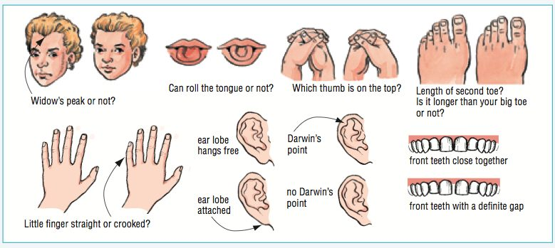
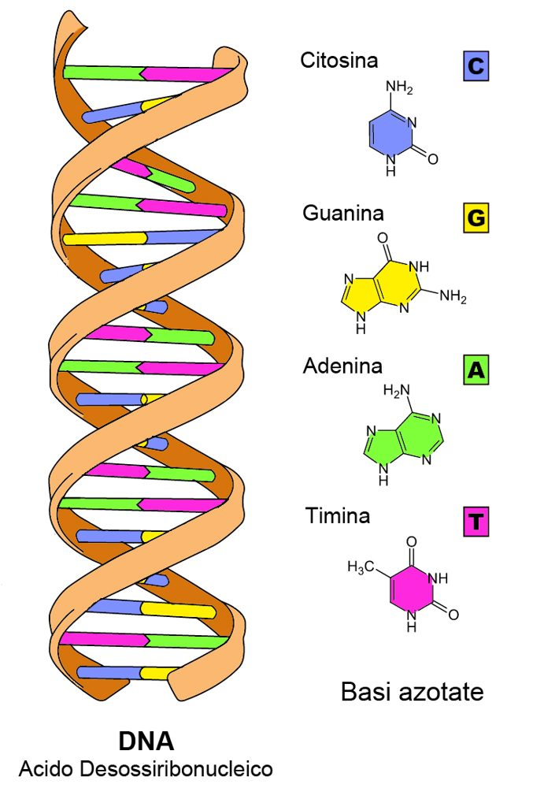
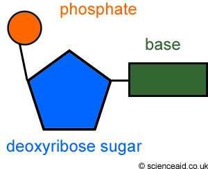
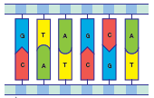
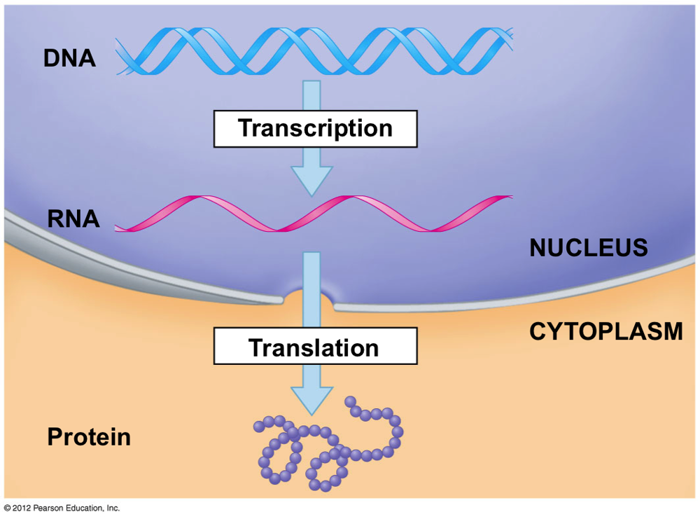
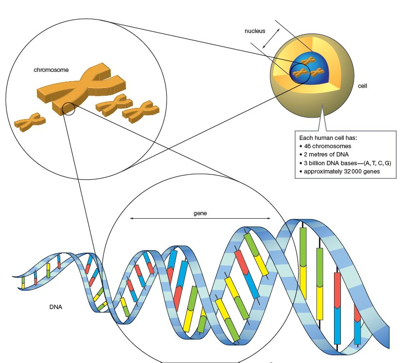
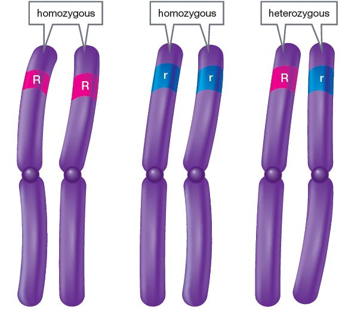

What is genetics?
Genetics is the study of heredity and the variation of inherited characteristics.
- Traits are physical characteristics inherited from one generation to the next, such as hair and skin colour, nose shape and height.
- Heredity is the passing on of characteristics from one generation to the next. It is why offspring look like their parents.

Gregor Mendel: father of modern genetics
Gregor Mendel, an Austrian monk, experimented with traits of pea plants and proposed the theory of particulate inheritance (1866). We now understand that we are formed by distinct particles, or factors, called genes. Genes don't blend: they are passed on unchanged to each generation. Although Mendel's work is the basis of modern genetics, it didn't influence the scientific community until many years after his death. When Charles Darwin proposed his theory of evolution in 1859, one of its major problems was the lack of a mechanism for heredity.
Phenotype = genotype + environment
The way you look, your biochemistry, physiology and behaviour is your phenotype. Your unique phenotype results from two equally important things: your genotype (all of your genes) and your environment. For example, a good basketball player usually needs to inherit genes for being tall, but also needs training and good nutrition.
The structure of DNA
All living things contain the molecular instructions for life: DNA (deoxyribonucleic acid). It is found in all living cells and gives the directions for traits such as eye colour or the scent of a flower.
- DNA is the "instruction code" for all life forms, passed from generation to generation.
- It is found in the nucleus and in the mitochondria (mtDNA).
- DNA is made of four bases: Adenine, Thymine, Guanine and Cytosine. The order of the bases (e.g. ATGCGTA) encodes all the information a cell needs.
In 1953, James Watson and Francis Crick won a Nobel Prize for identifying the structure of DNA: a twisted double helix.

Nucleotides
DNA is made of smaller units called nucleotides. Each nucleotide has three parts:
- a phosphate group
- a deoxyribose sugar
- a nitrogenous base (A, T, G or C).

Complementary base pairing
Nucleotides form complementary base pairs, joined by hydrogen bonds. Because of their chemical structure, each base can only pair with one other base:
- Adenine pairs with Thymine (A–T)
- Guanine pairs with Cytosine (G–C)
The nucleotides are arranged in two long strands forming a spiral, the double helix. Think of a twisted ladder: the base pairs form the rungs, and the sugar and phosphate molecules form the backbone (the sides of the ladder).

Write the complementary base for each base on this DNA strand.
| Strand 1 | A | T | G | C | C | A | T | G |
|---|---|---|---|---|---|---|---|---|
| Strand 2 |
From DNA to protein
DNA is used as a template (master copy) to make RNA. RNA travels out to the cytoplasm (the DNA itself can't leave the nucleus), where it is used as a template to make protein. Proteins do many jobs in the cell, and different genes make different proteins. (You don't need to know the terms transcription and translation.)

Chromosomes
Chromosomes are long, thin, thread-like structures made of DNA and protein, found in the nucleus. DNA is packaged and supercoiled into chromosomes, which are visible when a cell is dividing.
- In organisms with a nucleus (eukaryotes), chromosomes are linear, often appearing X-shaped.
- Most organisms without a nucleus (prokaryotes) have a single circular chromosome.
- The number of chromosomes differs from species to species.

Humans have 46 chromosomes in most cells: 22 pairs of autosomes (body chromosomes) and 1 pair of sex chromosomes. One chromosome of each pair comes from the biological father and one from the biological mother. In diploid cells, the two copies of each chromosome are a homologous pair ("homologous" means similar): they carry genes for the same characteristics at the same positions.
Genes and alleles
- A gene is the basic physical unit of inheritance: a specific section of DNA, at a particular location (locus, plural loci) on a chromosome, that usually codes for a protein and controls a trait such as blood group or hair colour. Humans have an estimated 20 000–30 000 genes.
- Genes differ from each other in the order of bases and the length of the DNA. The order of bases is the genetic code.
- Each gene can have different versions, called alleles. Alleles are at the same position on a chromosome but have slightly different base sequences, often enough to give the protein a different shape.
- If the two alleles are identical, the individual is homozygous (e.g. RR or rr). If they are different, the individual is heterozygous (e.g. Rr).

- What does DNA stand for? b. What are the 3 components of a nucleotide? c. Which nitrogen bases pair together? d. What is the difference between genotype and phenotype? e. What does homologous mean? f. How many chromosomes do normal humans have?
- Deoxyribonucleic acid.
- A phosphate group, a deoxyribose sugar and a nitrogenous base.
- Adenine with thymine (A–T) and cytosine with guanine (C–G).
- The genotype is the combination of alleles (genes) an organism carries; the phenotype is the physical expression (traits) of those genes, which is also affected by the environment.
- Similar: homologous chromosomes are a matching pair with the same genes in the same positions.
- 46 (23 pairs).